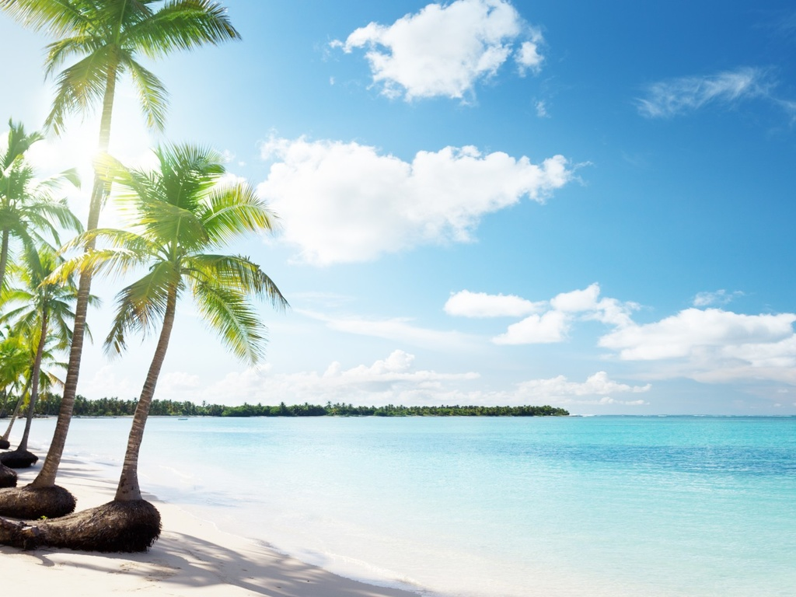
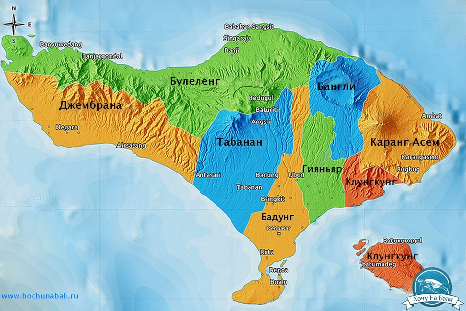
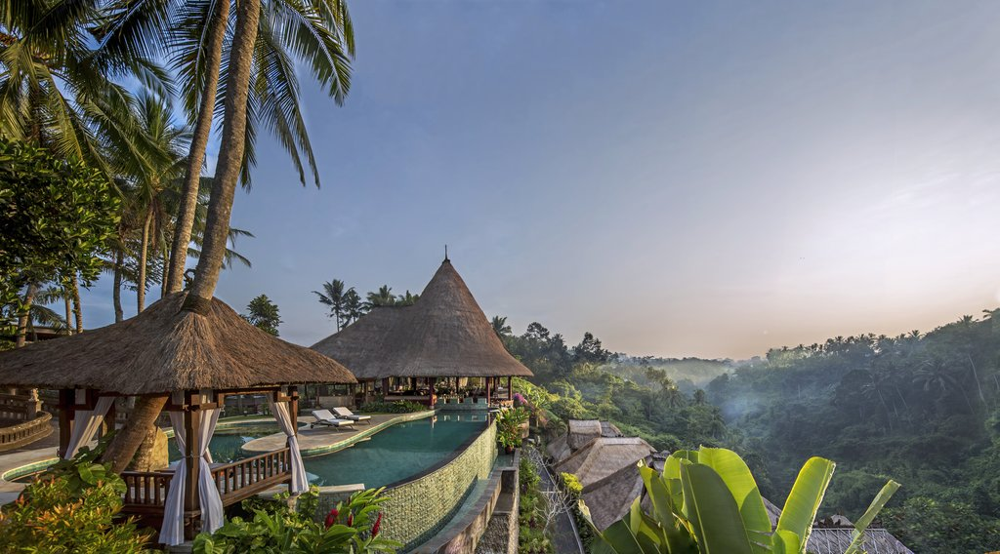

Автор: Иванов Илья, ДАТА: 14.03.2019

Простое упоминание о Бали вызывает мысли о рае. Это больше, чем место – это настроение, стремление, «тропическое» состояние души. Бали, знаменитый Остров Богов, является одним из самых популярных туристических направлений на планете. Здесь есть, казалось бы, всё: террасы рисовых полей, белые песчаные пляжи, живописные зелёные холмы, манящие заросли джунглей, суровые и величественные вулканы,
густые мангровые леса – ошеломляющие своей красотой места, от которых перехватывает дыхание.
ЧИТАТЬ ДАЛЕЕ...
Автор: Иванов Илья, ДАТА: 14.03.2019

Районы Бали очень разные и имеют разный микроклимат, инфраструктуру и природу, но все вместе они делают Бали многогранным и неповторимым местом для отдыха. Юг острова более населенный и более туристически развит, север и центр острова также привлекают туристов, хоть и в меньшем количестве. Восток острова предлагает более спокойный и размеренный отдых. Западную часть острова выбирают туристы, которые хотят уединения и окунуться в более традиционную жизнь балийцев.
Несмотря на сравнительно небольшие размеры острова Бали разные его части имеют отличную друг от друга атмосферу.
На острове Бали существует восемь муниципалитетов (kabupaten).
ЧИТАТЬ ДАЛЕЕ...
Автор: Иванов Илья, ДАТА: 14.03.2019

Делайте хорошие проекты, создавайте активы в бизнесе и езжайте скорее на Бали, подальше от зимы, холодов, Петербургских холодных ночей.
Теплые края ждут всех выпускников курсов ИТМО. Выберите комфортабельный отель прямо сейчас! Жмите по ссылке.
ЧИТАТЬ ДАЛЕЕ...